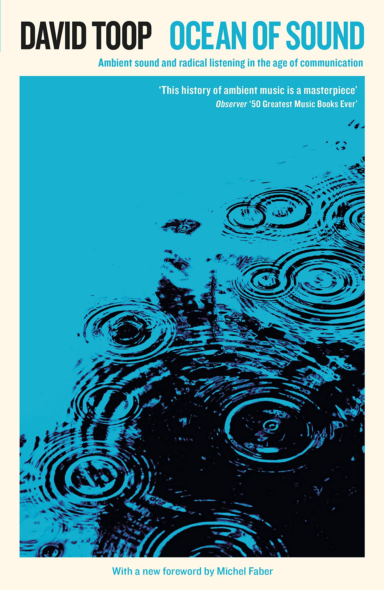
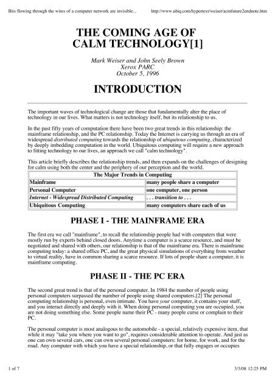
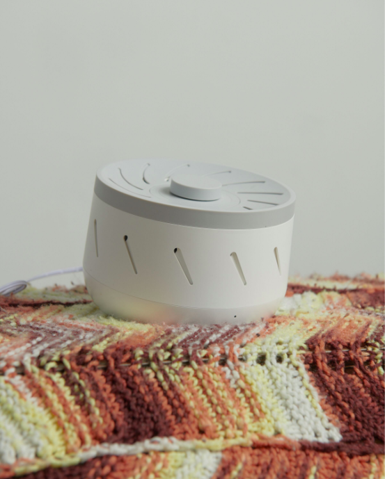
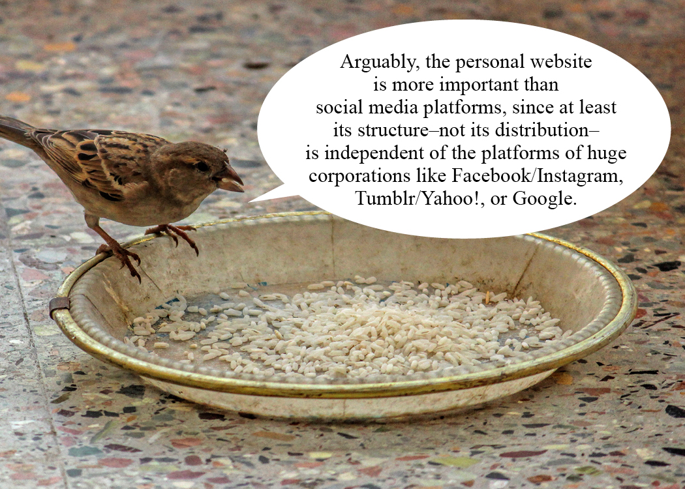

| works | music | ||
| thoughts | media | ||
| inspiration/ | pictures | ||
| people | |||
| writings/ |

|

Ocean of Sound
David Toop, book (2018) |

THE COMING AGE OF CALM TECHNOLOGY[1]
Mark Weiser and John Seely Brown, essay (1996) |

The cuteness of white noise
Laurel Schwulst,essay (2019) |
|

My website is a shifting house next to a river
of knowledge. What could yours be? Laurel Schwulst, essay (2018) |
about me | links | about the site
© 2015-2022 meirisoda. All the rights to the original artworks and text belong to soda.